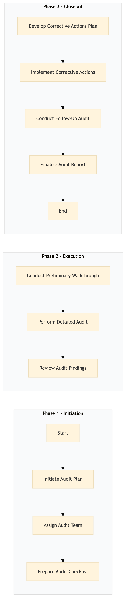

| Role | Steps |
|---|---|
| Health & Safety Manager | 1.1 1.2 1.3 3.1 3.4 |
| Health & Safety Officer | 2.1 2.2 2.3 3.2 3.3 |
| Step | Name | Role | System | Input | Output | KPI | Dec? | Exc? | Pain Point / Risk |
|---|---|---|---|---|---|---|---|---|---|
| 1.1 | Initiate Audit Plan | Health & Safety Manager | Oracle OPERA Cloud | Hotel compliance policies and local regulations | Audit plan document | Less than 2 hours | N | Y | Keeping up with frequent changes in health and safety regulations. |
| 1.2 | Assign Audit Team | Health & Safety Manager | Oracle OPERA Cloud | Audit plan document | Assigned team members list | Less than 30 minutes | N | Y | Ensuring adequate coverage and expertise for the audit. |
| 1.3 | Prepare Audit Checklist | Health & Safety Manager | Oracle OPERA Cloud | Audit plan document | Audit checklist document | Less than 2 hours | N | Y | Customizing the checklist to fit specific hotel needs. |
| 2.1 | Conduct Preliminary Walkthrough | Health & Safety Officer | Oracle OPERA Cloud | Audit checklist document | Preliminary walkthrough report | Less than 3 hours | Y | Y | Identifying potential issues that may require additional resources or time. |
| 2.2 | Perform Detailed Audit | Health & Safety Officer | Oracle OPERA Cloud | Preliminary walkthrough report | Detailed audit report | Less than 5 hours | Y | Y | Ensuring thoroughness while maintaining efficiency. |
| 2.3 | Review Audit Findings | Health & Safety Manager | Oracle OPERA Cloud | Detailed audit report | Audit findings summary | Less than 1 hour | Y | Y | Interpreting complex audit results and determining corrective actions. |
| 3.1 | Develop Corrective Actions Plan | Health & Safety Manager | Oracle OPERA Cloud | Audit findings summary | Corrective actions plan document | Less than 2 hours | Y | Y | Balancing immediate compliance with long-term sustainability. |
| 3.2 | Implement Corrective Actions | Health & Safety Officer | Oracle OPERA Cloud | Corrective actions plan document | Implementation status report | Less than 48 hours | Y | Y | Coordinating with multiple departments to ensure timely implementation. |
| 3.3 | Conduct Follow-Up Audit | Health & Safety Officer | Oracle OPERA Cloud | Implementation status report | Follow-up audit report | Less than 2 hours | Y | Y | Verifying that corrective actions have been effectively implemented. |
| 3.4 | Finalize Audit Report | Health & Safety Manager | Oracle OPERA Cloud | Follow-up audit report | Final audit report document | Less than 1 hour | N | Y | Summarizing all findings and providing actionable insights. |
A comprehensive health and safety compliance audit process at a Marriott full-service hotel to ensure adherence to local regulations and company policies.